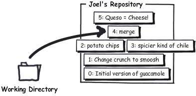
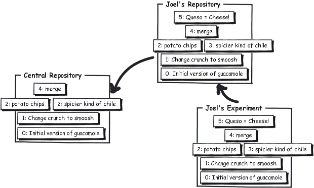

O Mercurial permite a você fazer experiências livremente. Imagine que enquanto digitava normalmente, você começa a ter problemas com seu editor de texto até que algo catastrófico acontece:
* 1/2 cebola roxa picada (cerca de 1/2 xícara)
* 1-2 pimentas habanero, sem talo e sem sementes, picadas
* 2 colheres de sopa de coentro picado bem fininho
* 1 colher de sopa de suco de limão
* 1/2 colher de chá de sal grosso
* Uma pitada de pimenta-do-reino moída na hora
* 1/2 tomate maduro, sem pele e sem sementes, picado
Amasse todos os ingredientes juntos.
Sirva com batatas chips.


* 1/2 cepebopolapa ropoxapa pipicapadapa (cepercapa depe 1/2 xípicaparapa)
* 1-2 pipimepentapas hapabapaneperopo, sepem tapalopo epe sepem sepemepentepes, pipicapadapas
* 2 copolheperepes depe sopopapa depe copoepentropo pipocapadopo bepem fipinipinhopo
* 1 copolheper depe sopopapa depe supucopo depe lipimapão
* 1/2 copolheper depe chapá depe sapal gropossopo
* Upumapa pipitapadapa depe pipimepentapa-dopo-repeipinopo mopoipídapa napa hoporapa
* 1/2 topomapatepe mapadupuropo, sepem pepelepe epe sepem sepemepentepes, pipicapadopo
Apamapassepe topodopos opos ipingrepedipiepentepes jupuntopos.
Sipirvapa copom bapatapatapas chipips.
É pra se amar o Emacs. Em todo caso, nem tudo está perdido. A maneira mais comum de se recuperar de coisas assim é simplesmente revertê-las com hg revert:
reverte os arquivos alterados à como estavam no último commit
C:\Users\joel\receitas> hg revert guac
Isto vai trazer os arquivos de volta exatamente da forma como eles estavam no último commit. O Mercurial não gosta de deletar nada, então ao invés de trocar o texto da receita na lingua do Pê, ele a renomeou:
C:\Users\joel\receitas> dir
Volume in drive C has no label.
Volume Serial Number is 84BD-9C2C
Directory of C:\Users\joel\receitas
02/11/2010 11:16 AM <DIR> .
02/11/2010 11:16 AM <DIR> ..
02/11/2010 11:16 AM <DIR> .hg
02/11/2010 11:16 AM 393 guac
02/11/2010 11:15 AM 510 guac.orig
2 File(s) 903 bytes
3 Dir(s) 40,958,005,248 bytes free
C:\Users\joel\receitas> del guac
C:\Users\joel\receitas> rename guac.orig guac
Mas e o que seria se você tivesse ido além e dado commit na versão bagunçada?
C:\Users\joel\receitas> hg com -m "Língua do pê é o que há" C:\Users\joel\receitas> hg log -l 3 changeset: 5:c7af1973de6d tag: tip user: Joel Spolsky <joel@joelonsoftware.com> date: Thu Feb 11 11:32:27 2010 -0500 summary: Língua do pê é o que há changeset: 4:0849ca96c304 parent: 2:4ecdb2401ab4 parent: 3:689026657682 user: Joel Spolsky <joel@joelonsoftware.com> date: Mon Feb 08 16:07:23 2010 -0500 summary: merge changeset: 3:689026657682 parent: 1:a52881ed530d user: Rose Hillman <rose@example.com> date: Mon Feb 08 15:29:09 2010 -0500 summary: pimenta mais ardida
desfaz um commit, contanto que você não o tenha transferido com hg push para mais ninguém
Existe um comando chamado hg rollback o qual pode salvar a sua pele, mas apenas se você ainda não o tiver transferido com hg push para mais ninguém. E este comando desfaz apenas um commit.
C:\Users\joel\receitas> hg rollback rolling back last transaction C:\Users\joel\receitas> hg log -l 3 changeset: 4:0849ca96c304 tag: tip parent: 2:4ecdb2401ab4 parent: 3:689026657682 user: Joel Spolsky <joel@joelonsoftware.com> date: Mon Feb 08 16:07:23 2010 -0500 summary: merge changeset: 3:689026657682 parent: 1:a52881ed530d user: Rose Hillman <rose@example.com> date: Mon Feb 08 15:29:09 2010 -0500 summary: pimenta mais ardida changeset: 2:4ecdb2401ab4 user: Joel Spolsky <joel@joelonsoftware.com> date: Mon Feb 08 15:32:01 2010 -0500 summary: batatas chips. Ninguém come uma só. C:\Users\joel\receitas> hg stat M guac C:\Users\joel\receitas> hg revert guac
Imagine que você quer fazer uma grande experiência. Seu chefe contratou um novo designer, Jim, e atualmente as demandas que você está recebendo dele são absurdas. Coisas como colocar texto na cor verde fluorescente, nada se alinha (por razões “artísticas”) e a usabilidade fica terrível. Você gostaria de vir num final de semana e refazer tudo direito, mas você tem receio de dar commit porque você não está 100% seguro de que as suas ideias serão levadas mais em conta que as desse design gráfico maluco. O Jim é basicamente um daqueles caras que você imagina que fuma um baseado desde a hora que acorda até quando vai dormir e todo mundo acha que isso não tem problema, já que os projetos dele são bons. Mas tudo tem um limite, não é? E na verdade seus designs não são lá tão bons. Além disso, ele é uma pessoa meio cabeça-dura.
Com o Mercurial, você pode fazer um clone experimental de todo o repositório:
C:\Users\joel\receitas> cd .. C:\Users\joel> hg clone receitas receitas-experimental updating to branch default 1 files updated, 0 files merged, 0 files removed, 0 files unresolved
Isto não é tão inútil quanto parece. Como tanto o repositório receitas quanto o receitas-experimental compartilham todo o seu histórico (até aqui), o Mercurial vai usar um truque de sistema de arquivos chamado “hard links”, de forma que a cópia pode ser criada bem rapidamente e sem ocupar mais um monte de espaço extra em disco.
Agora podemos fazer uma porção de alterações no nosso ramo experimental:
C:\Users\joel> cd receitas-experimental
E aqui está um grande experimento na minha receita de guacamole:
Amasse todos os ingredientes juntos.
Sirva com batatas chips.
Amasse todos os ingredientes juntos.
Sirva com batatas chips.
Esta receita fica realmente muito boa servida com QUESO.
QUESO é a palavra em espanhol para "queijo", mas no supermercado você pode encontrar em fatias quadradas e embaladas de queijo processado e que você pode derreter no micro-ondas com uma pitada de salsa. HUMM!
Aqui no repositório experimental, nós podemos dar commit livremente.
C:\Users\joel\receitas-experimental> hg com -m "Queso = Queijo!"
Você pode fazer alterações e trabalhar livremente, dando commit em tudo o que você quiser. Isso lhe dá o poder para fazer o controle de versão mesmo para seus experimentos mais sem noção sem, no entanto, afetar mais ninguém.
Se você considerar que seu experimento degringolou, você pode simplesmente deletar seu repositório experimental completamente. E problema resolvido.
Mas se ele deu certo, tudo o que você precisa fazer é transferir suas novas alterações:
C:\Users\joel\receitas-experimental> hg push pushing to c:\Users\joel\receitas searching for changes adding changesets adding manifests adding file changes added 1 changesets with 1 changes to 1 files
E para onde elas foram?
mostra uma lista dos repositórios remoto conhecidos
C:\Users\joel\receitas-experimental> hg paths default = c:\Users\joel\receitas
Aqui a entrada “default” mostra o caminho do repositório para onde o hg push vai transferir as alterações se você não especificar nenhum repositório. Normalmente é a localização do repositório que você clonou. Neste caso, é um diretório local, mas você também pode ter uma URL aqui.
C:\Users\joel\receitas-experimental> cd ..\recipes
Não se esqueça, só porque você transferiu as alterações para teste repositório…
C:\Users\joel\receitas> hg log -l 3 changeset: 5:9545248f3fc9 tag: tip user: Joel Spolsky <joel@joelonsoftware.com> date: Thu Feb 11 12:59:11 2010 -0500 summary: Queso = Cheese! changeset: 4:0849ca96c304 parent: 2:4ecdb2401ab4 parent: 3:689026657682 user: Joel Spolsky <joel@joelonsoftware.com> date: Mon Feb 08 16:07:23 2010 -0500 summary: merge changeset: 3:689026657682 parent: 1:a52881ed530d user: Rose Hillman <rose@example.com> date: Mon Feb 08 15:29:09 2010 -0500 summary: spicier kind of chile
… não quer dizer que já estamos trabalhando nessa nova versão.
C:\Users\joel\receitas> type guac * 2 abacates maduros * 1/2 cebola roxa picada (cerca de 1/2 xícara) * 1-2 pimentas dedo-de-moça, sem talo e sem sementes, picadas * 2 colheres de sopa de coentro picado bem fininho * 1 colher de sopa de suco de limão * 1/2 colher de chá de sal grosso * Uma pitada de pimenta-do-reino moída na hora * 1/2 tomate maduro, sem pele e sem sementes, picado Amasse todos os ingredientes juntos. Sirva com batatas chips. C:\Users\joel\receitas> hg parent changeset: 4:0849ca96c304 parent: 2:4ecdb2401ab4 parent: 3:689026657682 user: Joel Spolsky <joel@joelonsoftware.com> date: Mon Feb 08 16:07:23 2010 -0500 summary: merge
mostra em qual ou quais changesets atualmente você está trabalhando
Viu? Aquela dica sobre “Queso” está no changeset 5. Mas meu repositório principal está trabalhando atualmente com o changeset 4 e só porque alguém transferiu alguma atualização para o repositório, não significa que elas já apareceram no meu diretório de trabalho, de forma que eu ainda estou trabalhando no changeset 4.
Se eu quiser ver o que tem no changeset 5, eu tenho que usar o comando hg update:
C:\Users\joel\receitas> hg up 1 files updated, 0 files merged, 0 files removed, 0 files unresolved C:\Users\joel\receitas> hg parent changeset: 5:9545248f3fc9 tag: tip user: Joel Spolsky <joel@joelonsoftware.com> date: Thu Feb 11 12:59:11 2010 -0500 summary: Queso = Cheese! C:\Users\joel\receitas> type guac * 2 abacates maduros * 1/2 cebola roxa picada (cerca de 1/2 xícara) * 1-2 pimentas dedo-de-moça, sem talo e sem sementes, picadas * 2 colheres de sopa de coentro picado bem fininho * 1 colher de sopa de suco de limão * 1/2 colher de chá de sal grosso * Uma pitada de pimenta-do-reino moída na hora * 1/2 tomate maduro, sem pele e sem sementes, picado Amasse todos os ingredientes juntos. Sirva com batatas chips. Esta receita fica realmente muito boa servida com QUESO. QUESO é a palavra em espanhol para "queijo", mas no supermercado você pode encontrar em fatias quadradas e embaladas de queijo processado e que você pode derreter no micro-ondas com uma pitada de salsa. HUMM!
Percebe o que aconteceu aqui? As atualizações vieram mas elas estava no topo da versão na qual eu estava trabalhando. Os comandos push e pull apenas transferem alterações de um repositório para outro—eles não afetam os arquivos nos quais estou trabalhando no momento.
Neste instante, este é o estado dos repositórios:
O Mercurial é flexível quanto a mover alterações de um repositório para outro. Você pode transferir diretamente de um repositório experimental para o repositório central:
C:\Users\joel\receitas> cd ..\receitas-experimental C:\Users\joel\receitas-experimental> hg outgoing http://joel.example.com:8000/ comparing with http://joel.example.com:8000/ searching for changes changeset: 5:9545248f3fc9 tag: tip user: Joel Spolsky <joel@joelonsoftware.com> date: Thu Feb 11 12:59:11 2010 -0500 summary: Queso = Cheese! C:\Users\joel\receitas-experimental> hg push http://joel.example.com:8000/ pushing to http://joel.example.com:8000/ searching for changes adding changesets adding manifests adding file changes added 1 changesets with 1 changes to 1 files
Este push transferiu o changeset 5 para o repositório experimental diretamente para o repositório central. Agora, se eu voltar ao meu repositório, não haverá mais nenhuma alteração a se transferir!
C:\Users\joel\receitas-experimental> cd ..\receitas C:\Users\joel\receitas> hg out comparing with http://joel.example.com:8000/ searching for changes no changes found
Isso é porque o Mercurial sabe que o repositório central já recebeu este changeset específico de algum outro lugar. Isso é bem útil, porque de outra forma ele poderia tentar aplicar as alterações outra vez e poderia dar uma grande confusão.
Quando fizeram a proposta de emprego para o designer Jim ele disse que poderia começar no dia seguinte, mas ele ficou dois meses sem aparecer. A maioria das pessoas já tinha até esquecido dele e da proposta de emprego quando ele apareceu no escritório pela primeira vez para trabalhar, parecendo um pouco bronzeado. Para dizer a verdade, ninguém sabia direito quem ele era ou o que estava fazendo. Foi bem engraçado. Ele é um cara de aparência comum. Em algum momento as pessoas notaram, mas como ele era um novato, ninguém tinha muito peito para perguntar a ele o que tinha acontecido. Bem como também nunca perguntaram sobre os arranhões e hematomas em seu rosto. Não importa. Nós odiamos aquele cara.
Popde acontecer de algum dia você perceber, meses depois, que você tinha cometido um erro.
C:\Users\joel\receitas> hg diff -r 1:2 guac diff -r a52881ed530d -r 4ecdb2401ab4 guac --- a/guac Mon Feb 08 14:51:18 2010 -0500 +++ b/guac Mon Feb 08 15:32:01 2010 -0500 @@ -8,4 +8,4 @@ * 1/2 tomate maduro, sem pele e sem sementes, picado Amasse todos os ingredientes juntos. -Sirva com salgadinhos tipo nachos. +Sirva com batatas chips.
Guacamole com batatas chips? Que porcaria é essa?!
O Mercurial pode retornar a um changeset antigo para você. Ele verifica o changeset, descobre como fazer o contrário e o faz em seu diretório de trabalho atual. Vamos tentar retornar àquela antiga revisão 2.
C:\Users\joel\receitas> hg backout -r 2 --merge reverting guac created new head changeset 6:d828920f7f85 backs out changeset 2:4ecdb2401ab4 merging with changeset 6:d828920f7f85 merging guac 0 files updated, 1 files merged, 0 files removed, 0 files unresolved (branch merge, don't forget to commit)
Puxa vida, o que aconteceu?
C:\Users\joel\receitas> hg diff diff -r 9545248f3fc9 guac --- a/guac Thu Feb 11 12:59:11 2010 -0500 +++ b/guac Thu Feb 11 14:19:34 2010 -0500 @@ -8,7 +8,7 @@ * 1/2 tomate maduro, sem pele e sem sementes, picado Amasse todos os ingredientes juntos. -Sirva com batatas chips. +Sirva com salgadinhos tipo nachos. Esta receita fica realmente muito boa servida com QUESO. C:\Users\joel\receitas> hg com -m "desfaz coisas do passado" C:\Users\joel\receitas> hg push pushing to http://joel.example.com:8000/ searching for changes adding changesets adding manifests adding file changes added 2 changesets with 2 changes to 1 files
Agora bastante tempo pode ter passado. As batatas chips poderiam há muito tempo ter saído da receita. Alterações loucas de todo tipo podem ter ocorrido de forma que possa ser impossível incorporá-las nesta alteração. Neste caso, você vai estar gerando conflitos, os quais você vai precisar resolver de alguma maneira. Vamos falar sobre isso na próxima seção.
Teste você mesmo
Eis aqui as coisas que você deve saber depois da leitura deste tutorial:
- Reverter alterações acidentais, antes e depois de efetivá-las
- Clonar um repositório localmente para experiências
- Transferir atualizações entre repositórios
- Desfazer um erro antigo que já esteja no repositório desde há muito tempo
• A complete version control system based on Mercurial and Git
• Branching and merging that really works
• Secure hosting on our servers
• Seamlessly integrated code review
Looking for more?
Fog Creek offers free monthly webinars that go over the basics of Mercurial. Sign up at fogcreek.com.
Any questions?
Looking for help with Kiln? Check out the Kiln Knowledge Base.
About the author.
Joel Spolsky is the founder of Fog Creek Software, a New York company that proves that you can treat programmers well and still be profitable. Programmers get private offices, free lunch, and work 40 hours a week. Customers only pay for software if they’re delighted. Fog Creek makes FogBugz, Kiln, and Fog Creek Copilot. Joel's blog Joel on Software is read by programmers everywhere.